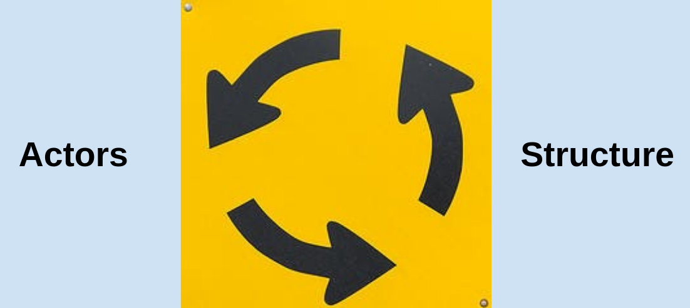

IV. What is the Future of Transnational Politics and IR?
Justin Leinaweaver (Spring 2026)
How do we explain international politics?
Who matters and what do they want?
What is the effect of anarchy?
What is the role of identity?
What is power?
What explains changes in the system?
How do we explain international politics?
Hopf (1998)
Who matters and what do they want?
What is the effect of anarchy?
What is the role of identity?
What is power?
What explains changes in the system?
Frieden, Lake and Schultz (2022)
Interests
Institutions
Interactions

1. Actors and Structures are Mutually Constituted
Criteria to be a Great Power (Waltz 1979)
Criteria to be a Great Power (Waltz 1979)
Size of population & territory, Resource endowment, Economic capability, Military strength, Political stability and competence
Discourse!
Security Dilemma
Neoliberal Cooperation (Economic Liberalism)
Interests
Institutions
Interactions
Therefore, increasing trade should reduce the occurrence of war.
Actors and structures are mutually constituted
Interests and identities are linked and multi-layered
Anarchy is an imagined community
Power is material AND discursive
Change is possible, difficult and a normal part of the process
Read Finnemore and Sikkink (1998)
Submit a reflection and real-world case to our Canvas discussion board
Setting standards of behavior
Verifying compliance
Resolving disputes
Reducing the costs of joint decision making